Host a webinar
Host large-scale events with 250+ attendees using Webinar Mode. Speakers appear on stage while the audience watches a livestream and interacts through chat — all within a standard Video Room.
Before you get started
- You must have an Admin or Moderator role.
- Webinar Mode requires an upgraded plan. If it's not available, contact your account administrator.
- Webinar creation follows the same flow as scheduling a video session. See Schedule a live session for the full setup steps (title, description, date, time, tags, access, pricing, and registration form).
Create a Video Room
- Click + Create Room in the top navigation bar.
- Select Video Room.
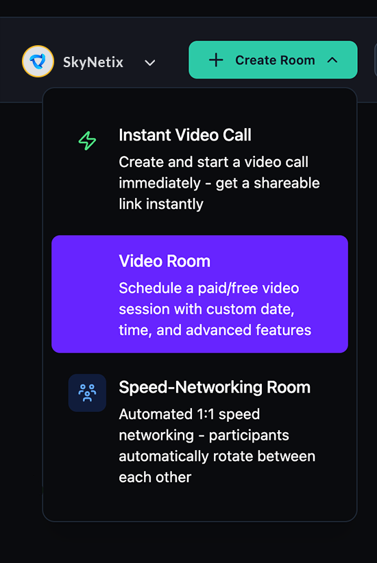
Enable Webinar Mode
- Under Options, locate the Webinar Mode toggle. The description reads "Host large-scale events with 250+ attendees."
- Toggle Webinar Mode on.
- Continue with the rest of the session setup (tags, access, pricing, registration form) and click Create Call ✓.
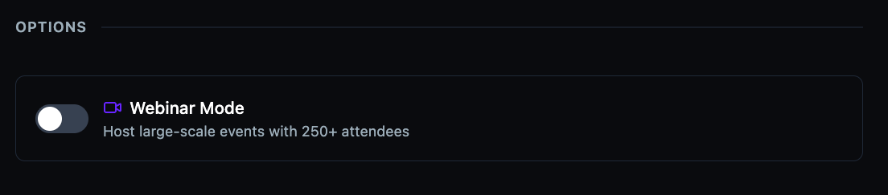
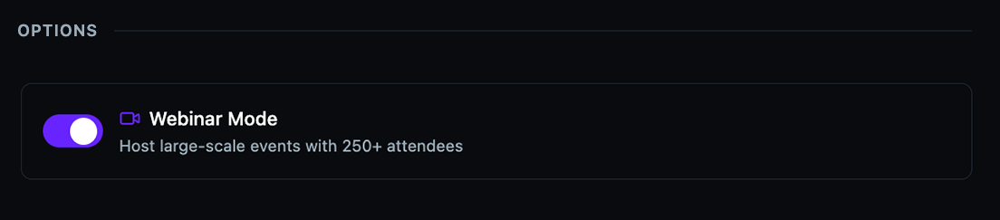
Start the webinar
When you join a session with Webinar Mode enabled, the broadcast does not begin automatically. You enter a pre-broadcast state where viewers cannot see or hear you.
- Click Join Session to enter the webinar room.
- The Webinar Control panel appears on the left. It shows a Start Webinar button and a notice: "Not visible yet: Viewers cannot see or hear you until you start the webinar."
- When you're ready, click Start Webinar. The status changes to LIVE & Recording with the message "Viewers can see you."
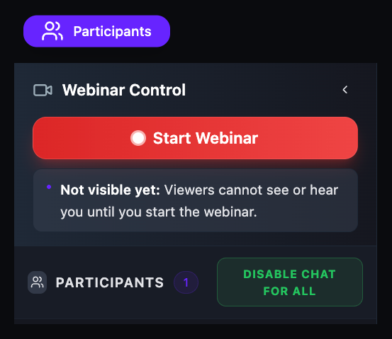
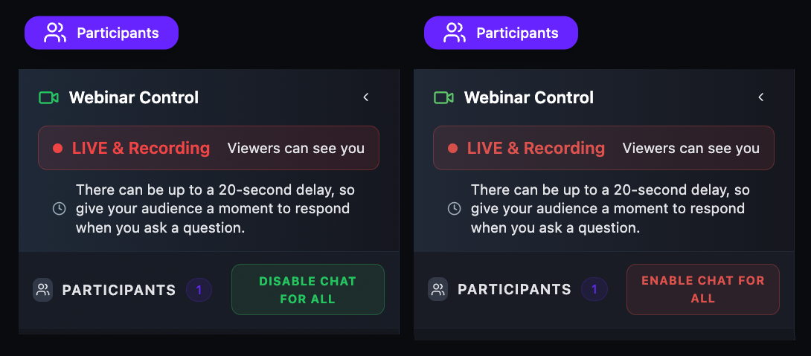
Understand the Stage and Audience
Once the webinar is live, the session splits into two views:
- Stage — speakers appear on camera in the main grid. The Participants panel lists everyone currently on stage with an On Stage label next to their name.
- Audience — viewers watch the livestream. They can use chat (if enabled) but cannot turn on their camera or mic unless given permission.
The left sidebar shows the Webinar Control panel at the top (with live status and the chat toggle), followed by the Participants list and Chat panel. The top bar displays Time left and the Extend button. Your organization's logo appears in the top-right corner.
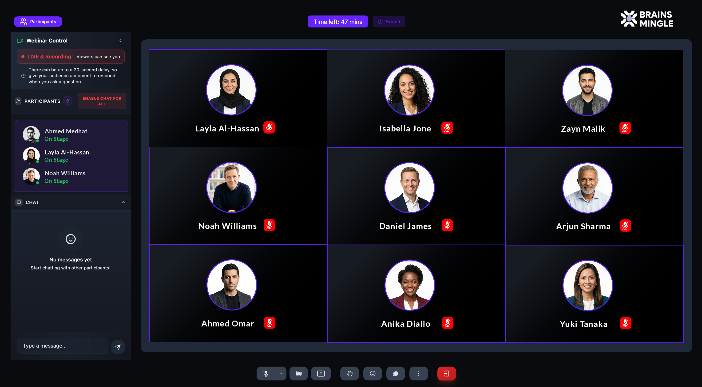
Manage participant permissions
- Click the Participants button in the top-left corner.
- The Participants panel shows a search bar and the Allow Participants To controls.
- Toggle permissions on or off:
- Mic — allow or prevent participants from using their microphone.
- Camera — allow or prevent participants from turning on their camera.
- Share — allow or prevent participants from sharing their screen.
- Chat — allow or prevent participants from sending chat messages.
A disabled permission appears grayed out with a crossed-out icon.
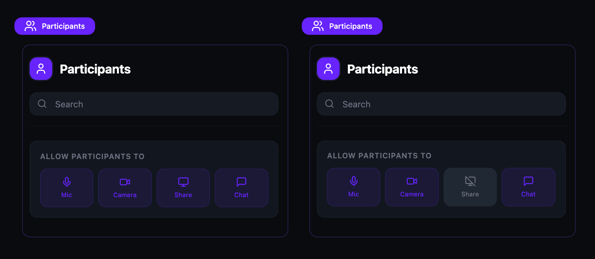
Raise hand
Participants can raise their hand to signal they want to speak. The host sees raised hands in the Participants panel.
- A participant clicks the Raise Hand button in the call toolbar. The button turns purple when active. Click again to lower.
- The host's Participants button shows a raised-hand badge with the count.
- In the Participants panel, a Raised Hands section appears below the permission controls, listing each person who raised their hand in order.
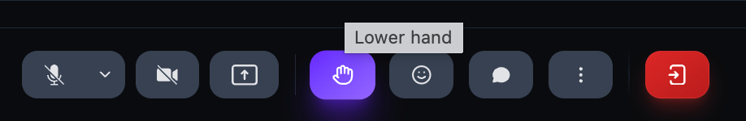
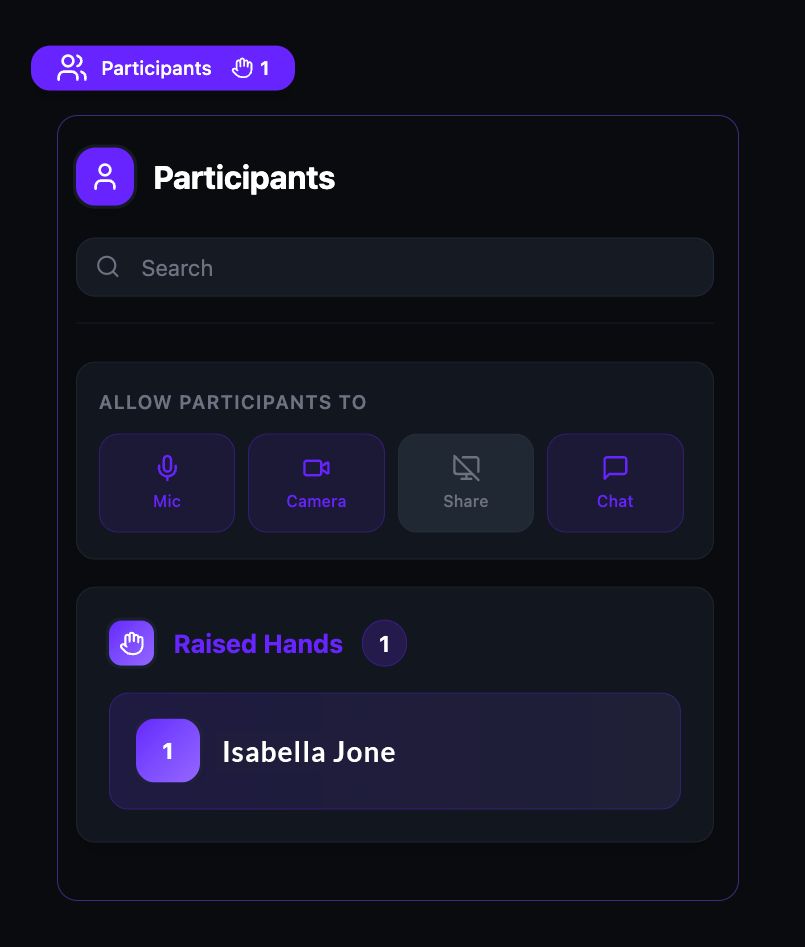
Annotate a shared screen
When a speaker shares their screen, hosts and speakers can draw annotations on the shared content in real time. Annotations are visible to all participants.
- While screen sharing is active, click the Annotations button (pencil icon) in the call toolbar to enable annotations.
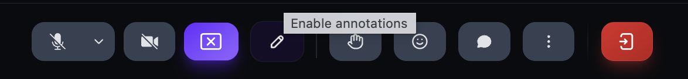
- When annotations are enabled, the pencil icon turns purple to confirm the feature is active.
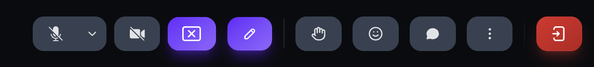
-
The annotation tools panel appears with the following controls:
- Draw (pencil icon, purple) — freehand draw on the shared screen.
- Eraser — erase individual annotations.
- Color picker — choose a drawing color: black, red, blue, or white.
- Delete all — clear all annotations at once.
- Close — close the annotation tools panel.
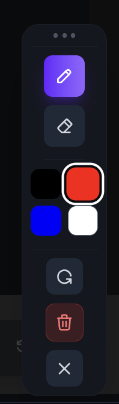
Extend the webinar
- The top bar shows Time left with the remaining session duration.
- Click Extend next to the timer.
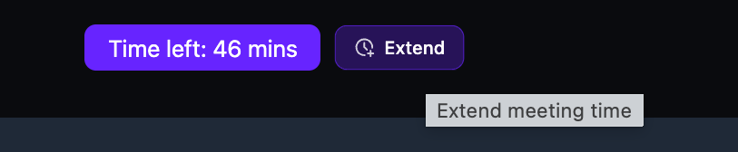
- In the Extend Meeting Time dialog, select a duration: 5 m, 10 m, 15 m, 30 m, 45 m, or 60 m.
- Click Add [duration] to extend, or click Cancel to go back.
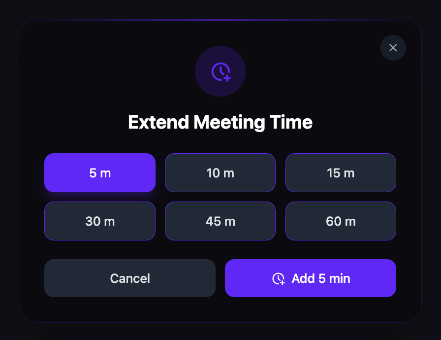
End the webinar
- Click the Leave button (red icon) at the far right of the call toolbar.
- A dialog asks how you want to leave:
- Leave (others stay) — you leave the session but other participants can continue.
- End for Everyone — the session ends immediately for all participants.
- Click your choice, or click Cancel to return to the session.

Post-call feedback
After a session ends, participants see a feedback dialog.
- The dialog shows the room name and date, and asks "How was your call?"
- Rate the video & audio quality using a 1–5 star rating.
- Optionally enter text feedback in the "Any other feedback?" field.
- Click Submit to send your feedback, or Skip to dismiss.
Feedback is anonymous — it is not seen by anyone and is only used to improve the platform.

Manage recordings
After a recorded session ends, recordings appear under the Recordings tab on the room detail page.
- Navigate to the room detail page and click the Recordings tab.
- Each recording card shows the session title, date, a video player preview, and the current visibility setting.
- Under Change visibility, select one:
- Only me — only you can see the recording.
- Only members — only community members can view it.
- Public — anyone with the link can view it.
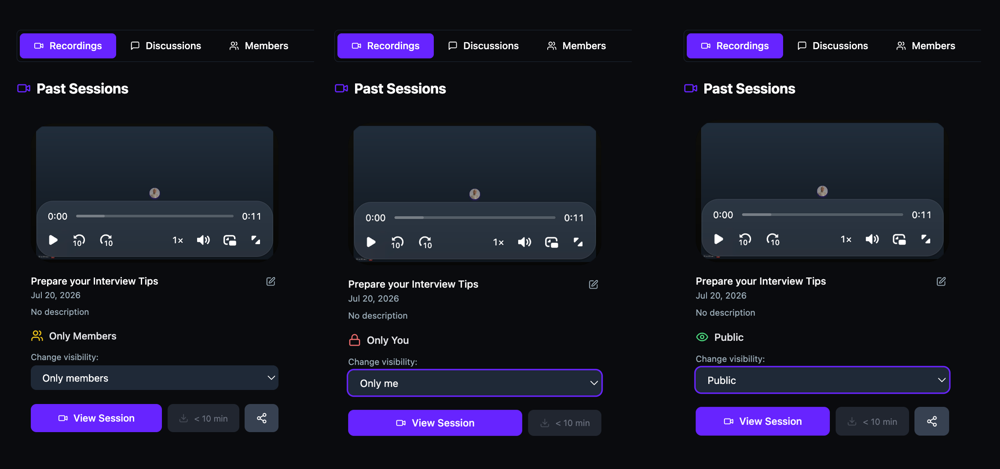
- Click View Session to open the full recording page.
- On the recording page, you can play the recording, click Download to save it locally, or click Share to share the link. Click the edit icon next to the title to rename it.
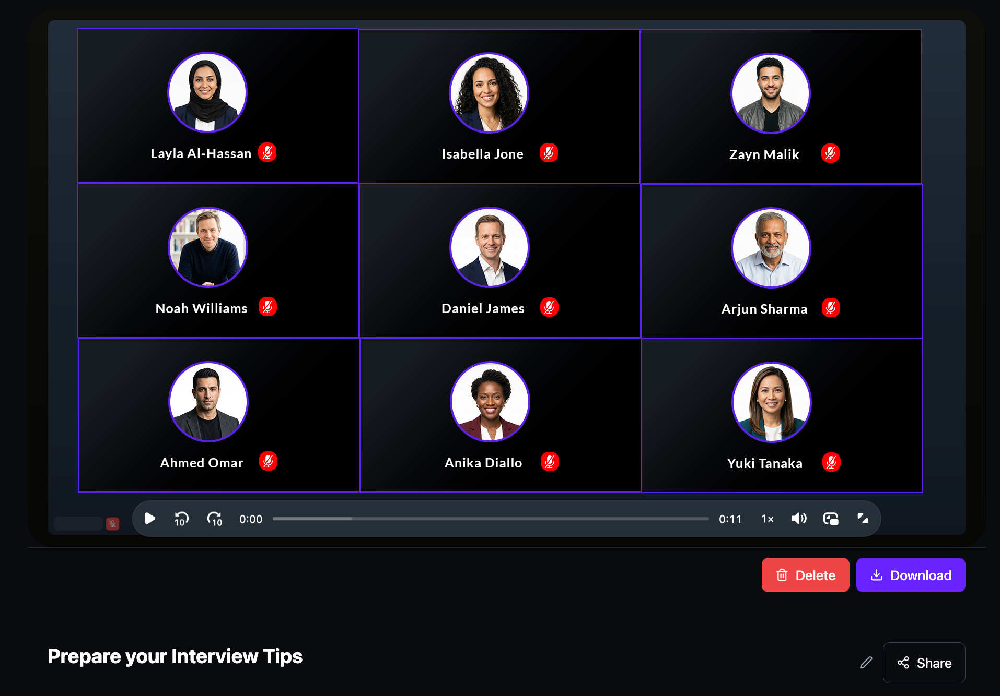
Delete a recording
- On the recording page, click Delete.
- A confirmation dialog warns that this action is irreversible — the recording, comments, views, and all associated data will be permanently deleted.
- Type "I confirm" in the text field.
- Click Delete Recording Permanently. To cancel, click Cancel.
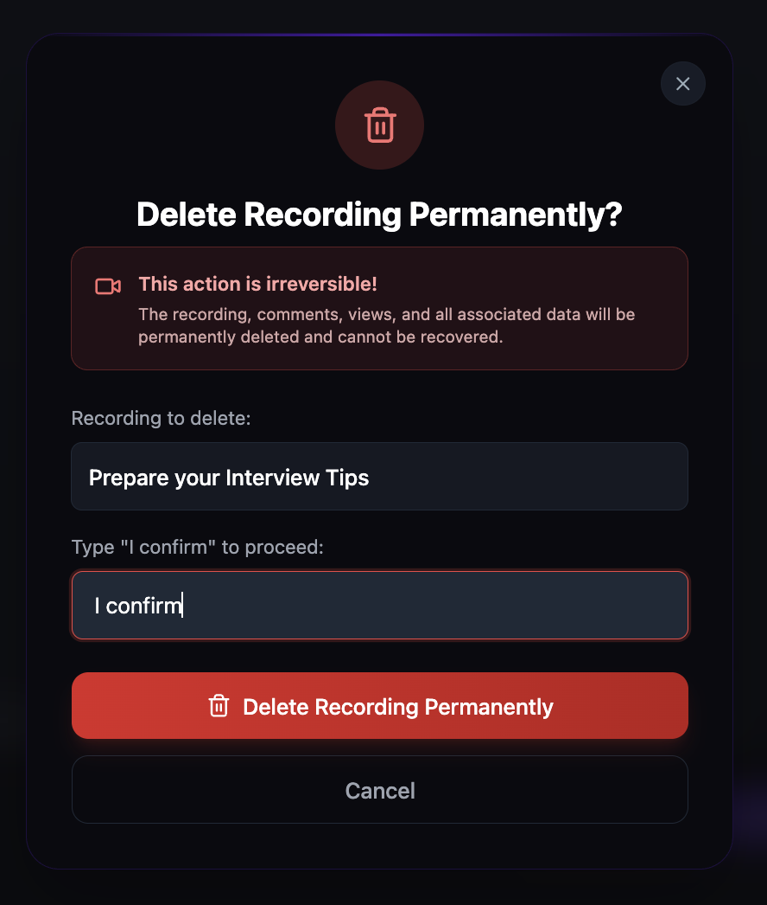
Delete a room
- On the room detail page, click the three-dot menu (⋮) in the top-right corner. The menu shows three options: Edit Room, Cancel Room, and Delete Room.
- If the room has recordings, Delete Room is disabled and shows "Delete recordings first." You must delete all recordings before you can delete the room.
- Once all recordings are deleted, Delete Room becomes active. Click it.
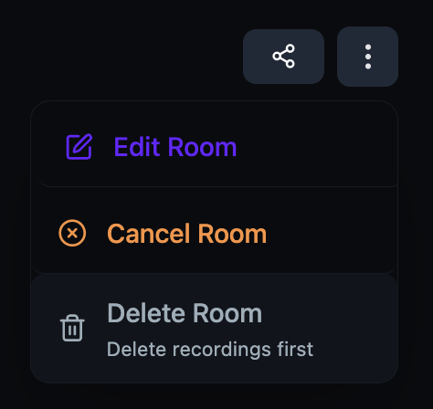
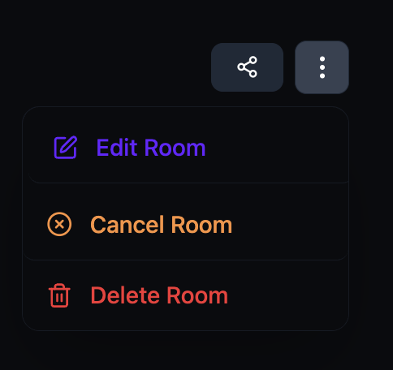
- A confirmation dialog warns that this action cannot be undone — the room and all associated data will be permanently deleted.
- Type the room's name to confirm deletion.
- Click Delete Room Permanently. To cancel, click Cancel.
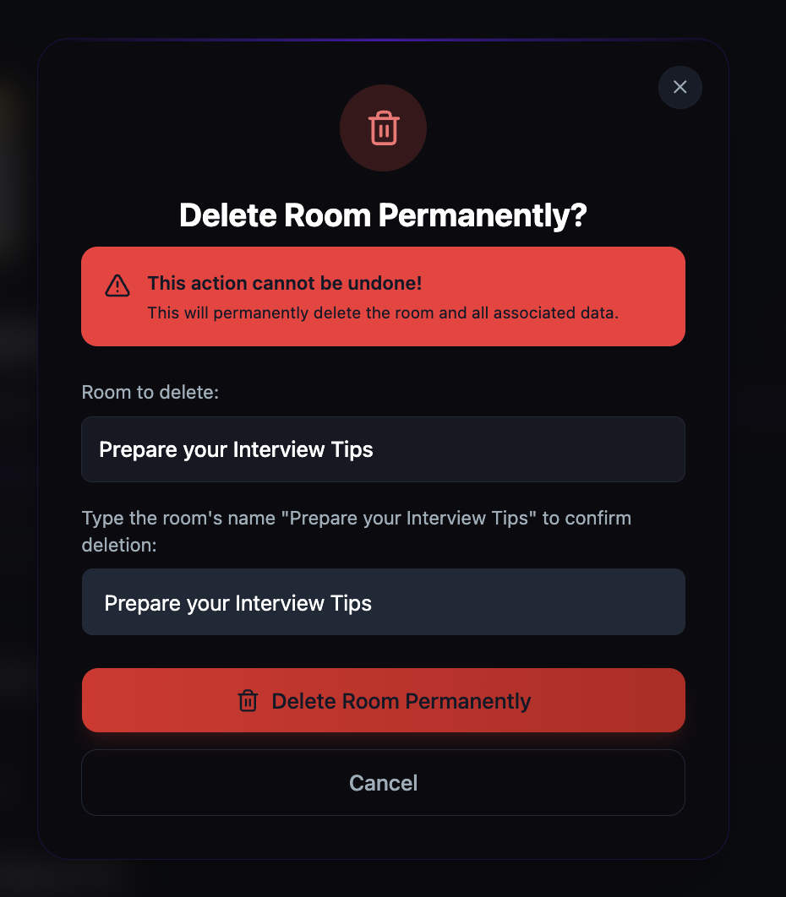